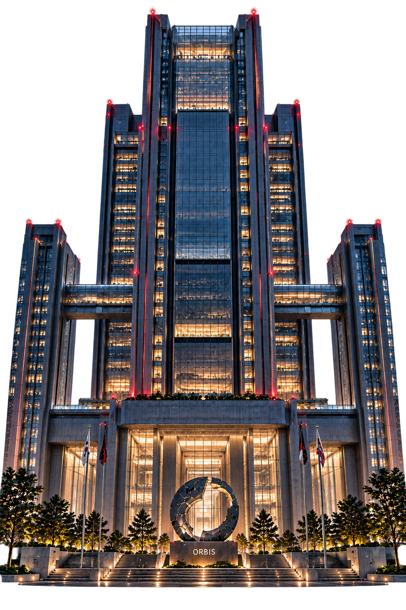

시민의 안전과 일상의 안정을 우선합니다.
ORBIS / REPUBLIC OF KOREA BRANCH
지부 소개 · 시설 안내
49층에 담긴 지부의 업무와 직원 지원 시설을 살펴보세요.
01 / BUILDING DIRECTORY
층별 안내
핵심 시설은 건물 안내도에서, 전체 층별 시설은 아래 목록에서 확인하세요.
ORBIS / 49F BUILDING대한민국지부 주요 시설
중앙 본관과 양옆의 남녀 생활관을 확인하세요.

여자 기숙사여성 직원 생활관
ORBIS 지부49F · 대한민국지부
남자 기숙사남성 직원 생활관
※ 건물 위치 안내는 이해를 돕기 위한 이미지입니다. 세부 층별 시설은 아래에서 확인하세요.
전체 층별 안내
항목을 눌러 층별 시설 확인 ↓49–47F통합상황관제센터⌄
- 49F중앙 상황실
- 48F균열 관측실
- 47F긴급 지휘실
46–44F균열 대응 1팀 · 전방 제압⌄
- 46F1팀 사무실
- 45F전술 브리핑룸
- 44F장비 정비실
43–41F균열 대응 2팀 · 탐지·공간⌄
- 43F탐지 분석실
- 42F공간 계측실
- 41F현장 준비실
40–38F균열 대응 3팀 · 방호·지원⌄
- 40F방호 장비실
- 39F지원 통제실
- 38F팀 대기실
37–35F균열 대응 4팀 · 여명조⌄
- 37F새벽 출동 대기실
- 36F작전실
- 35F휴게실
34–32F단속반⌄
- 34F수사·단속 사무실
- 33F증거 분석실
- 32F조사실
31–29F의료 지원과⌄
- 31F응급 처치실
- 30F진료실
- 29F회복 병동
28–26F감사과⌄
- 28F등급심사팀
- 27F정보보안팀
- 26F내부감찰팀
25–23F등록과⌄
- 25F각성자 등록실
- 24F면담실
- 23F민원 기록실
22–20F행정·총무과⌄
- 22F인사·복무
- 21F재무·시설
- 20F직원 지원
19F오르비스 지부장실⌄
지부장 집무실 · 비서실 · 전용 회의실
18–16F공용 회의·교육 구역⌄
- 18F대회의실
- 17F세미나실
- 16F신규 요원 교육실
15–13F연구·분석 구역⌄
- 15F균열 데이터 분석실
- 14F기술 연구실
- 13F장비 시험실
12–10F기록·보안 자료실⌄
- 12F기록 보존고
- 11F문서 열람실
- 10F보안 서버실
9–7F직원 회복 구역⌄
- 9F수면실
- 8F휴게 라운지
- 7F심리 회복실
6F직원 식당⌄
주간·야간 식당 · 특식 제공 · 식사 라운지
5F체력단련실⌄
헬스장 · 개인 훈련실 · 스트레칭 존
4F직원 전용 카페⌄
야간 카페 · 소규모 휴게 공간
3F사우나·찜질방⌄
샤워실 · 사우나 · 온열 휴식 공간
2F보안 접수·방문자 안내⌄
출입 심사 · 방문자 대기실 · 안내 데스크
1F로비 · 편의점 · 입점 카페⌄
외부인 이용 가능 구역 · 출입 안내
※ 세부 시설 및 출입 권한은 지부 내부 규정에 따라 운영됩니다.
02 / OUR PRINCIPLES
조직 신조
균열 너머의 위협으로부터 일상의 질서를 지킵니다.
권한에 상응하는 책임을 다합니다.
직원의 신분과 직무상 기밀을 보호합니다.
현장 인력의 생명과 회복을 보장합니다.
03 / EMPLOYEE SUPPORT
복리후생
임무 후 충분한 회복과 편안한 일상을 지원합니다.
근무 전후 이용할 수 있는 조용한 휴식 공간
현장 출동 이후 몸을 회복하는 온열 휴식 시설
주간·야간·심야 식사 및 정기 특식 운영
헬스장과 개인 훈련실, 스트레칭 공간
야간 운영 카페와 소규모 휴게 공간
방문객도 이용할 수 있는 로비 편의시설
※ 시설별 이용 대상과 운영 시간은 내부 규정에 따릅니다.
04 / STAFF RESIDENCE
직원 생활관
퇴근 후의 일상까지 안전하게 지원합니다.
10 MIN지부에서 도보 약 10분
1인 1실독립적인 개인실 제공
남녀 생활관 분리 운영
현장직 및 야간 중심 근무자에게 개인실을 기본 배정합니다. 그 외 직원은 희망 신청 후 선별하여 배정합니다.
※ 기본 배정은 거주 공간 보장을 뜻하며, 실제 거주 의무는 직무별 규정에 따릅니다.
ORBIS / REPUBLIC OF KOREA · BRANCH INFORMATION